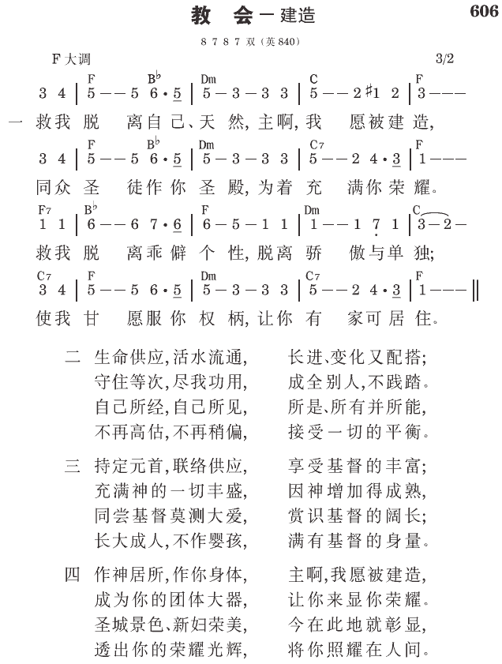

弗4:12 为要成全圣徒，目的是为着职事的工作，为着建造基督的身体。
弗4:16 本于祂，全身借着每一丰富供应的节，并借着每一部分依其度量而有的功用，得以联络在一起，并结合在一起，便叫身体渐渐长大，以致在爱里把自己建造起来。
基督身体的建造乃是借着身体的长大。我们都需要长大，好使身体得着建造。我们若长大，身体就长大。身体的长大乃是为着建造。
借着身体的众肢体被成全，作职事的工作
身体的长大是借着身体的众肢体被成全，作新约职事的工作─建造基督的身体（弗四12）。今天，许多圣徒经常不能在聚会中尽功用，原因乃是缺少长大。我们若天天长大，我们就必定是活的。那么，当我们来到聚会中，就会献上祷告，或说，“赞美主！”这指明我们是活的。然而，今天大部分的光景都不是这样。我参加过一些祷告聚会，整个聚会都是死的。在这种情形里的召会不可能有建造。我们都需要天天活、天天长大；这样，全召会都会长大。这个长大就等于建造。
借着身体的长大，众肢体都能得着成全，作新约职事的工作。这工作不是由使徒、申言者、传福音者、或牧人和教师作的，乃是由基督身体上普通、平凡的肢体作的。当每个肢体都得着成全作新约职事的工作，众肢体就知道如何建造身体。建造乃是新约职事的工作。若众圣徒都实行职事的工作，聚会就会活起来。
在神的生命里长大
身体的建造是借着身体在神生命里的长大（西二19），因此是生机的。
在变化的过程中
身体的建造也是在变化的过程中进行的（林前三12）。今天我们正渐渐长大，我们乃是在变化的过程中。自然而然的，我们就被变化。变化不是改变、调整自己，或改正自己；那只是外表的改变。变化乃是新陈代谢的，是生命里的事。
我们用餐时，把食物接受到胃里，立刻就有消化─新陈代谢的作用发生。胃若要新陈代谢的蠕动，它必须被一些东西充满。在吃的事上，我多次经历到这新陈代谢的作用。有一次聚会说完话之后，我筋疲力尽。我吃了一点东西，二十分钟后，就变得有活力了。新陈代谢在我里面开始作用，又过了十分钟，我变得更有活力；我不仅有活力，更被我里面新陈代谢的作用所变化。这是变化的一个说明。我们需要长大，使我们能被变化。被变化之后，我们就适合于基督身体的建造。
身体把自己建造起来
以弗所四章十六节说，身体渐渐长大，以致把自己建造起来。这意思是说，身体的长大就是身体把自己建造起来。
借着每一丰富供应的节，得以联络在一起
身体是借着每一丰富供应的节，得以联络在一起，而把自己建造起来。这些丰富供应的节，就是以弗所四章十一节所说有恩赐的人：使徒、申言者、传福音者、牧人和教师。这些有恩赐的人是丰富的节，满了基督这生命的供应。他们是把圣徒联络一起的因素。这是头一种的联络。
身体也是借着每一部分依其度量而有的功用，得以结合在一起，而把自己建造起来。这是第二种的联络。头一种借着丰富供应的节的联络，就像把一幢建筑的骨架安置起来，骨架安好之后，就需要填满骨架的空间。第二种的联络，借着每一部分的功用结合在一起，就像安好了骨架之后去填满骨架的空间。结合乃是交织一起，直到交织物填满所有的空间。
身体上结合、交织在一起的部分，不是有恩赐的人，乃是身体上普通的肢体。有恩赐的人联络在一起形成骨架，普通的肢体就依其度量尽功用而结合并交织在一起，以填满所有的空间。这不仅仅是个道理，我实行过，看见过，也经历过；这是可能的。你若有心，就要向主祷告说，“主，怜悯我，并赐我够用的恩典。我要生机的活你。”然后，你要去和当地的圣徒聚在一起。圣徒中可能有几位也和你一样。当你们聚在一起，你们中间就会有长大。这种长大等于建造。一些有恩赐的人联络在一起形成骨架，其他肢体依其度量尽他们的一分功用。这样，召会就建造起来。
在爱里
基督的身体也是在爱里把自己建造起来。“在爱里”这短短的片语，在以弗所书中用了六次（一4，三17，四2，15，16，五2）。神在爱里，在永远里拣选了我们（一4），并且祂也在爱里，在永远里预定我们得儿子的名分（5）。没有爱，神就不会拣选或预定我们。今天我们需要在爱里长大，需要在爱里建造身体。我们爱主、爱召会、也爱每个肢体。不管他们多软弱、多邪恶，我们都爱他们，因为他们是肢体。我们的态度应该是不喜欢暴露他们，反而愿意在爱里遮盖他们。这就是长大，也就是建造 （《在神与人关系里生机的联结》八一至八五页）。
参读：《在神与人关系里生机的联结》第五章；《基督身体的构成与建造》第三至六章。
